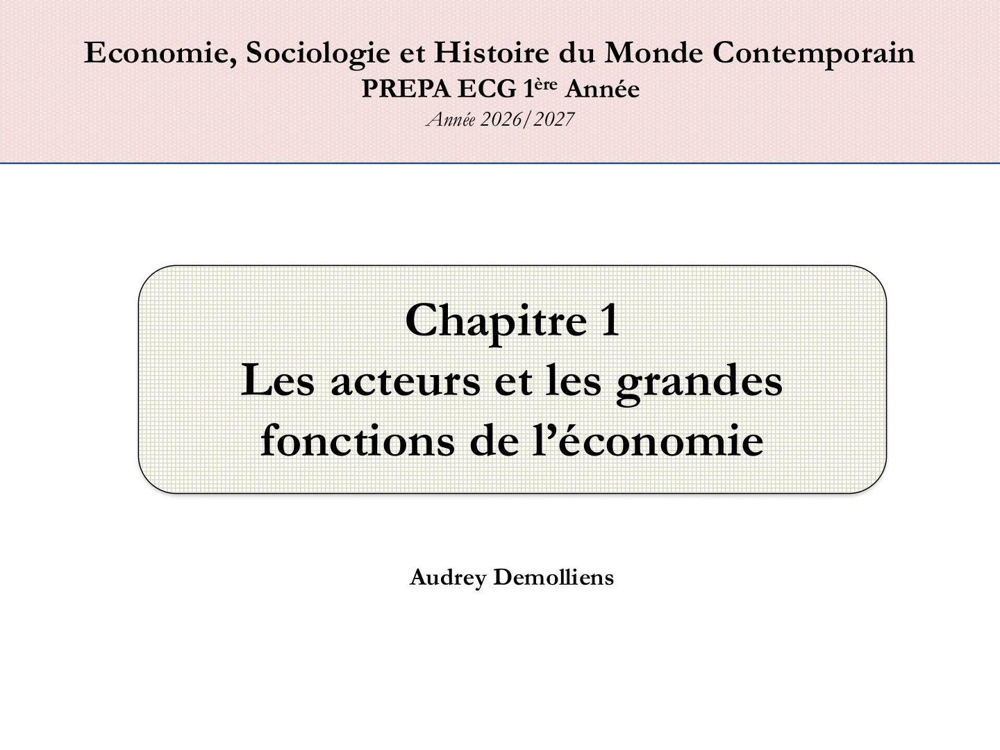

Couverture Entreprises Ménages APU Finance Extérieur Comptabilité Production Précédente Aller à une diapositive01 · Couverture · Les acteurs et les grandes fonctions de l’économie 02 · Introduction · Regrouper les acteurs 03 · Introduction · Fonctions et comptabilité nationale 04 · Introduction · Une représentation construite 05 · Entreprise · Définition et objectif de profit 06 · Entreprise · Économie sociale et production marchande 07 · Entreprise · Organisation, taille et LME 08 · Entreprise · PME, microentreprises et ETI 09 · Entreprise · GE, chiffre d’affaires et bilan 10 · Document · Croiser les critères de taille des entreprises 11 · Entreprises en France en 2023 · Champ et agrégats 12 · Entreprises en France en 2023 · Concentration 13 · Schumpeter · Destruction créatrice et mondialisation 14 · Document · Nombre d’entreprises par catégorie en 2023 15 · Document · Répartition des agrégats par catégorie 16 · Document · Valeur ajoutée par secteur en 2023 17 · Document · Entreprises par secteur en 2022 18 · Production marchande · Définition et facteurs 19 · Capital fixe, capital circulant et FBCF 20 · Investissement · La FBCF dans le support 21 · Ménages · Définition et taille moyenne 22 · Document · Évolution de la taille des ménages 23 · Document · Structure familiale des ménages 24 · Ménages · Fonctions, ressources et production 25 · Ménages · Revenu disponible et pouvoir d’achat 26 · Document · Composition du revenu disponible 27 · Document · Revenu nominal et pouvoir d’achat 28 · Document · RDB et composantes, 2024–2026 29 · Consommation et épargne · Utilisation du revenu 30 · Dépenses pré-engagées · Poids dans le revenu 31 · Consommation · Prix, volume et financement collectif 32 · Dépense finale et consommation effective 33 · Document · Dépenses de consommation par fonction en 2025 34 · Document · Dépenses pré-engagées dans le RDB 35 · Document · Consommation et pouvoir d’achat 36 · Épargne et patrimoine · Flux et stock 37 · Épargne et investissement · Quatre ratios 38 · Document · Taux d’épargne des ménages 39 · Administrations publiques · Périmètre 40 · Administrations publiques · Évolution des fonctions 41 · Musgrave · Allocation, redistribution, stabilisation 42 · Administrations publiques · Prélèvements et réglementation 43 · Administrations publiques · Ratios de recettes et dépenses 44 · Document · Dépenses et recettes publiques, 1995–2025 45 · Document · Principaux ratios de finances publiques 46 · Document · Soldes par administration publique 47 · Rosanvallon · Crise de financement de l’État-providence 48 · Rosanvallon · Efficacité et légitimité 49 · Sociétés financières · Intermédiation et crédit 50 · Sociétés financières · Marchés et internationalisation 51 · Reste du monde · Ouverture et balance des paiements 52 · Reste du monde · Importations et exportations 53 · Comptabilité nationale · Histoire et institutions 54 · Comptabilité nationale · Trois usages 55 · Comptabilité nationale · Secteurs, emplois et ressources 56 · Comptabilité nationale · Enregistrement des opérations 57 · Circuit économique · Flux réels et monétaires 58 · Document · Les deux représentations du circuit économique 59 · Comptabilité nationale · Enchaînement des comptes 60 · Comptabilité nationale · Calcul et report des soldes 61 · Document · Comptes des secteurs institutionnels 62 · Comptabilité nationale · TES, TEE et TOF 63 · Production · Les facteurs 64 · Travail · Définition et typologie de Freyssinet 65 · Capital · Fixe, circulant et autres facteurs 66 · Production · Choisir une combinaison productive 67 · Production · Fonction Y = f(K, L) 68 · Production · Substitution et intensité capitalistique 69 · Production · Rendements factoriels et productivité marginale 70 · Production · Rendements factoriels et rendements d’échelle Suivante

Diapositive 1 / 70 · Couverture Ouvrir l’image en grand
Texte extrait de cette diapositive Le texte des graphiques incorporés n’est pas toujours extractible. La diapositive et le PDF conservent leur contenu visuel complet.
Economie, Sociologie et Histoire du Monde Contemporain
PREPA ECG 1ère Année
Année 2026/2027
Chapitre 1
Les acteurs et les grandes
fonctions de l’économie
Audrey Demolliens
Pour les précisions de révision sur certaines formulations, consulter le cours expliqué .
Pour lire toutes les diapositives sans JavaScript, ouvrir le PDF complet .
Liens vers les 70 images originales Page 1 · Couverture · Les acteurs et les grandes fonctions de l’économie Page 2 · Introduction · Regrouper les acteurs Page 3 · Introduction · Fonctions et comptabilité nationale Page 4 · Introduction · Une représentation construite Page 5 · Entreprise · Définition et objectif de profit Page 6 · Entreprise · Économie sociale et production marchande Page 7 · Entreprise · Organisation, taille et LME Page 8 · Entreprise · PME, microentreprises et ETI Page 9 · Entreprise · GE, chiffre d’affaires et bilan Page 10 · Document · Croiser les critères de taille des entreprises Page 11 · Entreprises en France en 2023 · Champ et agrégats Page 12 · Entreprises en France en 2023 · Concentration Page 13 · Schumpeter · Destruction créatrice et mondialisation Page 14 · Document · Nombre d’entreprises par catégorie en 2023 Page 15 · Document · Répartition des agrégats par catégorie Page 16 · Document · Valeur ajoutée par secteur en 2023 Page 17 · Document · Entreprises par secteur en 2022 Page 18 · Production marchande · Définition et facteurs Page 19 · Capital fixe, capital circulant et FBCF Page 20 · Investissement · La FBCF dans le support Page 21 · Ménages · Définition et taille moyenne Page 22 · Document · Évolution de la taille des ménages Page 23 · Document · Structure familiale des ménages Page 24 · Ménages · Fonctions, ressources et production Page 25 · Ménages · Revenu disponible et pouvoir d’achat Page 26 · Document · Composition du revenu disponible Page 27 · Document · Revenu nominal et pouvoir d’achat Page 28 · Document · RDB et composantes, 2024–2026 Page 29 · Consommation et épargne · Utilisation du revenu Page 30 · Dépenses pré-engagées · Poids dans le revenu Page 31 · Consommation · Prix, volume et financement collectif Page 32 · Dépense finale et consommation effective Page 33 · Document · Dépenses de consommation par fonction en 2025 Page 34 · Document · Dépenses pré-engagées dans le RDB Page 35 · Document · Consommation et pouvoir d’achat Page 36 · Épargne et patrimoine · Flux et stock Page 37 · Épargne et investissement · Quatre ratios Page 38 · Document · Taux d’épargne des ménages Page 39 · Administrations publiques · Périmètre Page 40 · Administrations publiques · Évolution des fonctions Page 41 · Musgrave · Allocation, redistribution, stabilisation Page 42 · Administrations publiques · Prélèvements et réglementation Page 43 · Administrations publiques · Ratios de recettes et dépenses Page 44 · Document · Dépenses et recettes publiques, 1995–2025 Page 45 · Document · Principaux ratios de finances publiques Page 46 · Document · Soldes par administration publique Page 47 · Rosanvallon · Crise de financement de l’État-providence Page 48 · Rosanvallon · Efficacité et légitimité Page 49 · Sociétés financières · Intermédiation et crédit Page 50 · Sociétés financières · Marchés et internationalisation Page 51 · Reste du monde · Ouverture et balance des paiements Page 52 · Reste du monde · Importations et exportations Page 53 · Comptabilité nationale · Histoire et institutions Page 54 · Comptabilité nationale · Trois usages Page 55 · Comptabilité nationale · Secteurs, emplois et ressources Page 56 · Comptabilité nationale · Enregistrement des opérations Page 57 · Circuit économique · Flux réels et monétaires Page 58 · Document · Les deux représentations du circuit économique Page 59 · Comptabilité nationale · Enchaînement des comptes Page 60 · Comptabilité nationale · Calcul et report des soldes Page 61 · Document · Comptes des secteurs institutionnels Page 62 · Comptabilité nationale · TES, TEE et TOF Page 63 · Production · Les facteurs Page 64 · Travail · Définition et typologie de Freyssinet Page 65 · Capital · Fixe, circulant et autres facteurs Page 66 · Production · Choisir une combinaison productive Page 67 · Production · Fonction Y = f(K, L) Page 68 · Production · Substitution et intensité capitalistique Page 69 · Production · Rendements factoriels et productivité marginale Page 70 · Production · Rendements factoriels et rendements d’échelle